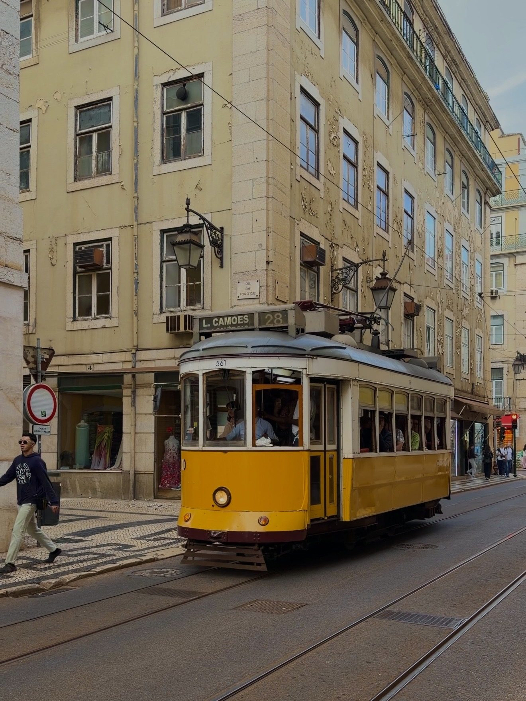
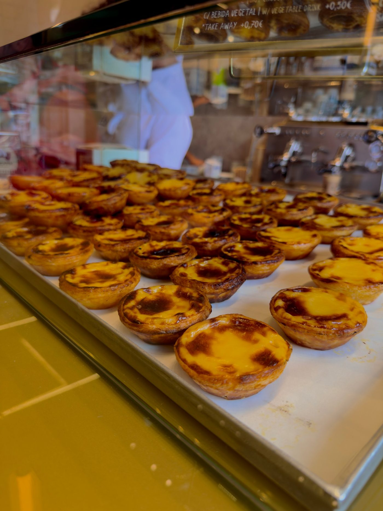
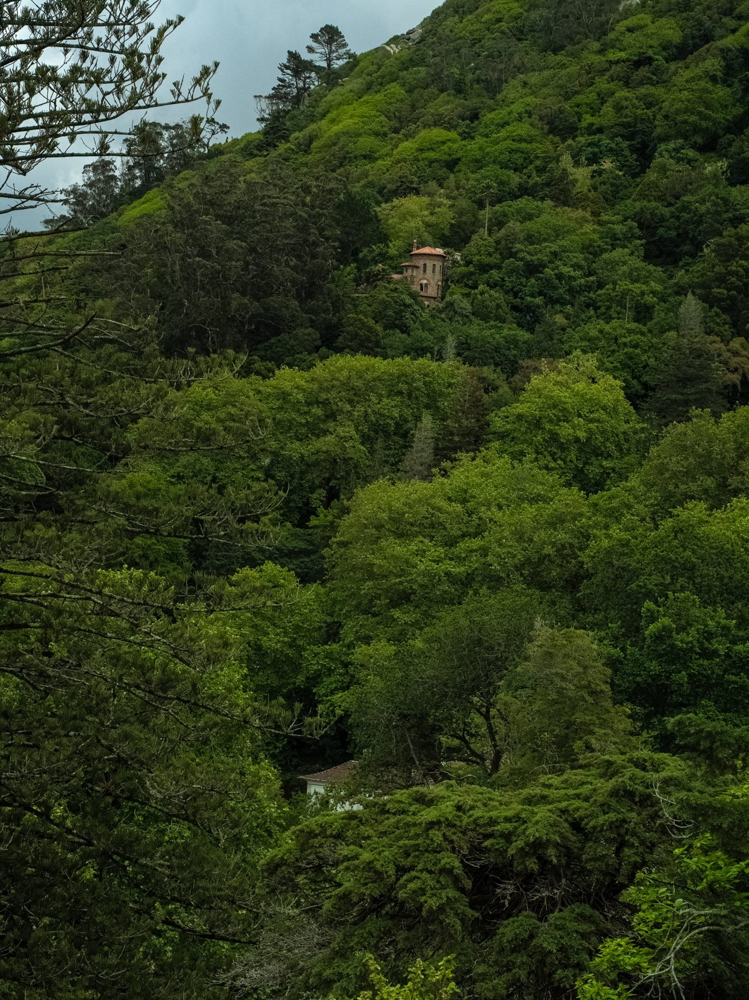
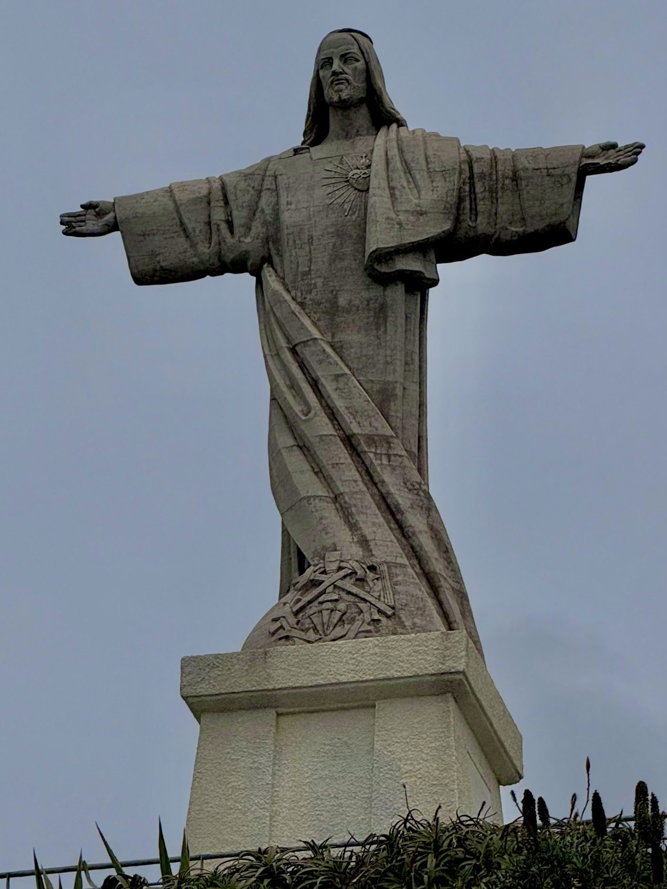
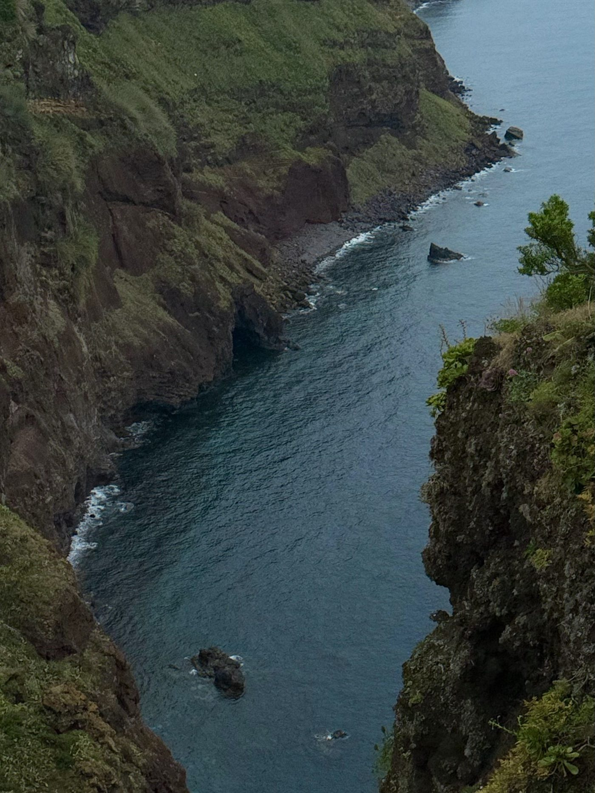
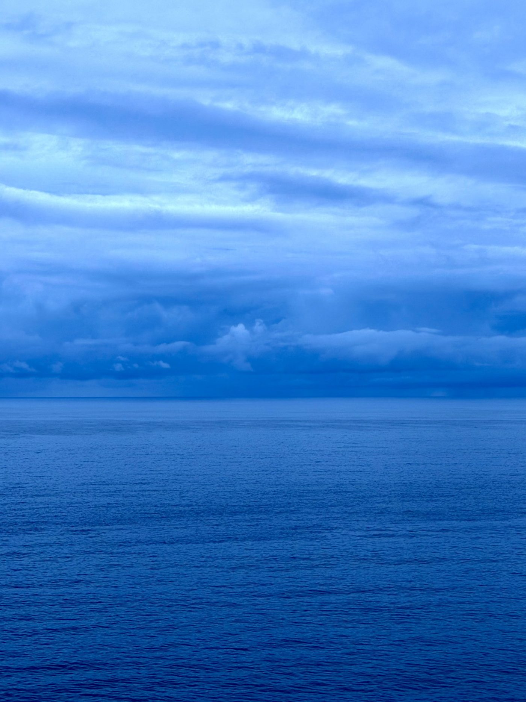
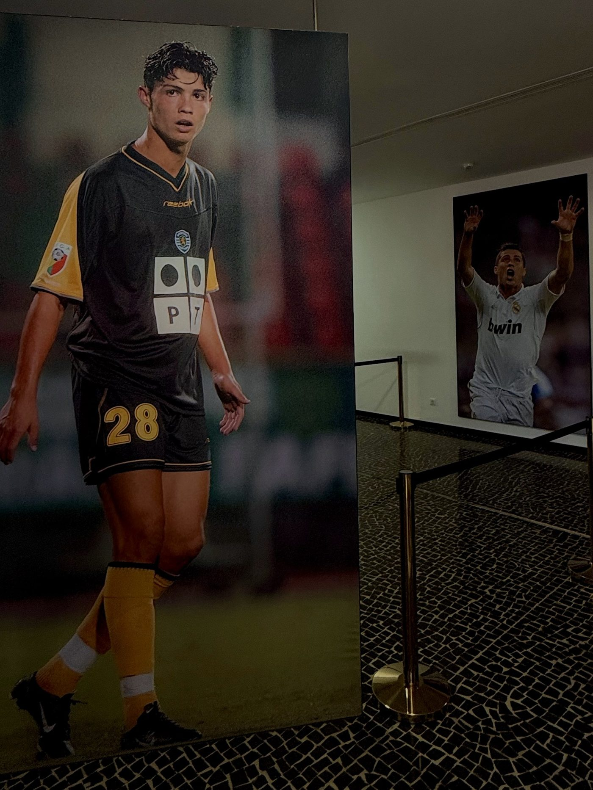
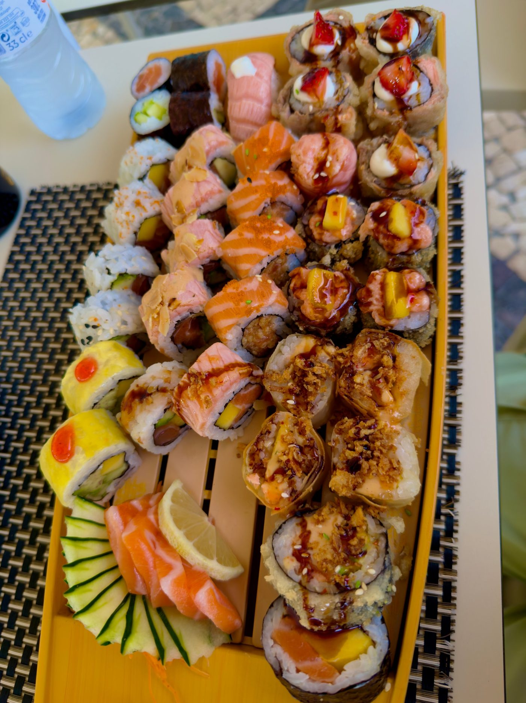
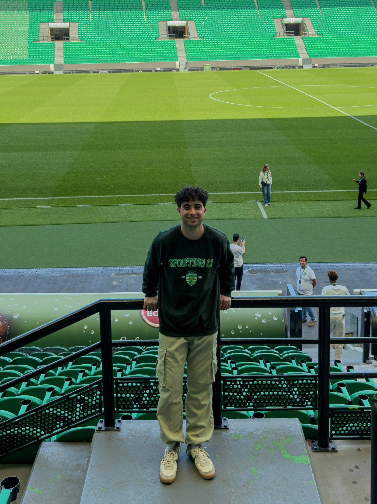

Where I visited
The capital - hilly, tiled, and endlessly walkable.
Fairytale palaces and hilltop forest. About 40 minutes from Lisbon.
A Portuguese island in the Atlantic - closer to Morocco than Lisbon. Rented a car and drove everywhere.
One last night before the flight home.
Day by day
The plan was to fly out April 30. That flight got cancelled, and the day turned into a scramble - rebooking, figuring out what was even still available, watching the option that made sense get more expensive by the hour. Ended up on a new flight out of JFK at 8pm on May 1, a day later than planned. Not exactly the start I had in mind, but Lisbon is Lisbon whether you land on time or not.
Landed around 8am and didn't waste any time. Spent the morning wandering Jardim do Torel, caught a glimpse of Tram 28 (just to see it, not ride it), and took in the view from Miradouro da Graça. Lunch at O Prego, then a pastel de nata from Manteigaria immediately after - apparently one stop wasn't enough. Castelo de São Jorge in the early afternoon, dinner at Bonjardim, sunset at Miradouro Portas do Sol, and a late snack at Potato Project to close it out. Asleep by 12:30am. First day in, already worn out in the best way.

Tram 28, Lisbon

Pastéis de nata, Lisbon

Sunset over Alfama, Lisbon
Full day trip, up early for an 8am train. Moorish Castle first, then Pena Palace - with lunch there too, convenient if a little touristy - followed by Quinta da Regaleira and the iconic treats at Casa Piriquita before the 3pm train back to Lisbon. Dinner was, somewhat absurdly, McDonald's - had to see what a Portuguese one was like. Spent most of the night talking with people from the hostel. Bed around midnight.

On the walls of the Moorish Castle, Sintra

Forested hillside, Sintra

Pena Palace, Sintra
Flew to Madeira at 9:40am, picked up the rental car (a BMW) by 12:30pm. First stop was Cristo Rei at Garajau - not the famous one near Lisbon, a smaller version on the island. Somewhere in there: a real introduction to Madeira driving and parking, which is no joke. Dinner at Loft, sunset at Jardim do Ilhéu, asleep by 10:30. A day that hit different - felt pretty overwhelmed and didn't get through as much as planned. New island, rental car, jet lag catching up. Makes sense.

Cristo Rei, Garajau

Madeira coastline

Atlantic Ocean, Madeira
Slept in, which was needed. CR7 Museum in the early afternoon, then out to Fanal Forest, where a guy visiting from Minnesota ended up helping take some photos. All-you-can-eat at Kanji Sushi for dinner, where I got into a long conversation with a couple on their honeymoon. Asleep a little after midnight.

CR7 Museum, Madeira

Fanal Forest, Madeira

All-you-can-eat sushi at Kanji
Lunch at Bolo do Caco, then an afternoon spent just driving around and exploring the island. Tried to make it to Cascata dos Anjos waterfall, but it was packed and looked like more trouble than it was worth, so skipped it. Kanji Sushi again for dinner - too good and too cheap not to go back. Sunset at Lido Beach, asleep around 11:30.

Funchal at night, Madeira
Flew back to Lisbon at 8:40am and packed the day: Lisbon Aquarium, lunch at Dallas Burger, a walk through Rua Augusta Arch, a tour of the Sporting CP stadium. Took the train to Cascais in the early evening - genuinely one of the nicer spots of the whole trip - for dinner (McDonald's, again) and sunset at Boca do Inferno, then back to Lisbon. Asleep around 11:30.

Sunrise at Madeira airport

Rua Augusta Arch, Lisbon

Sporting CP stadium tour, Lisbon
Flight home at 10am. Trip over.
Map
Lisbon on the coast, Madeira out in the Atlantic.